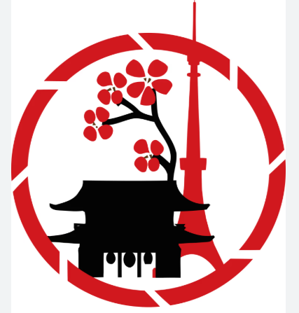
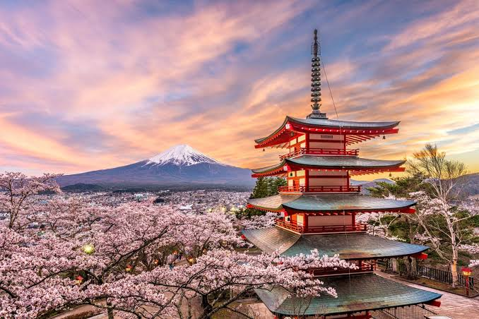
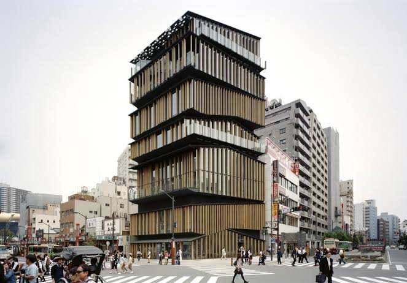
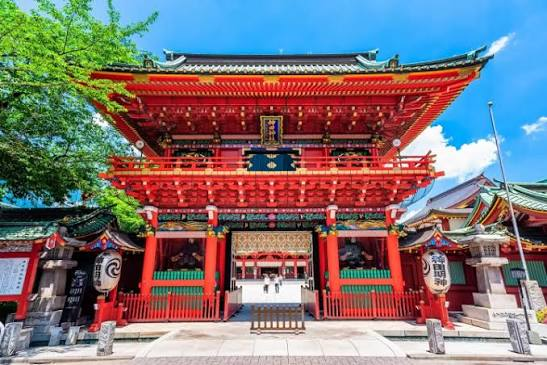
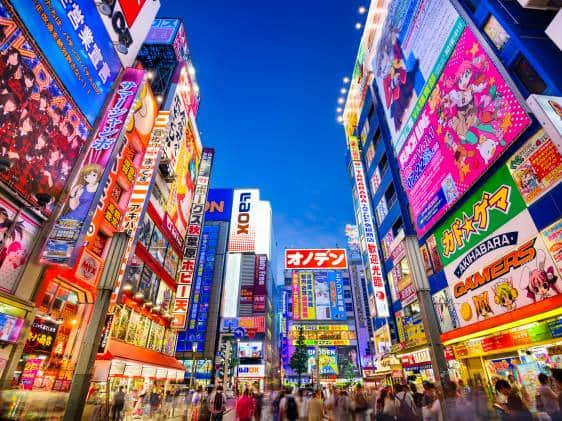
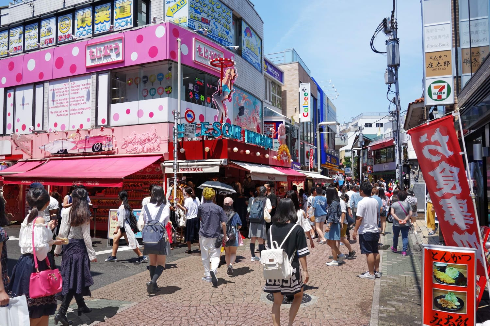
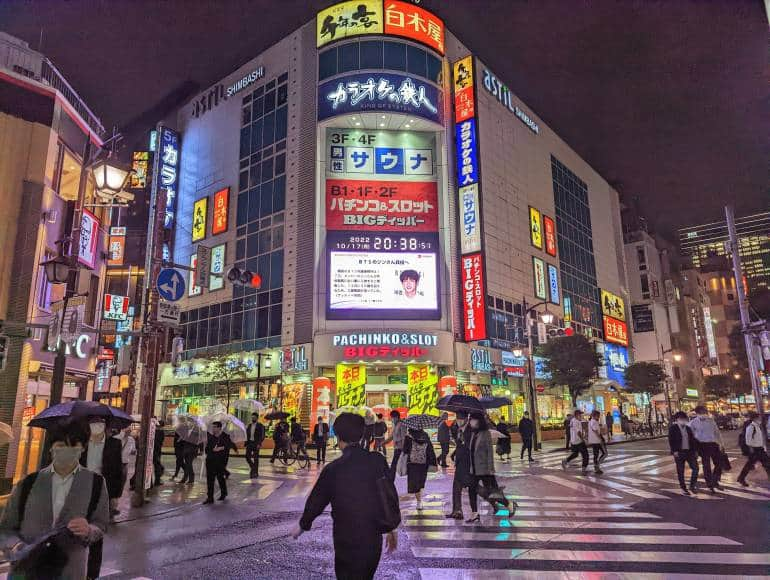
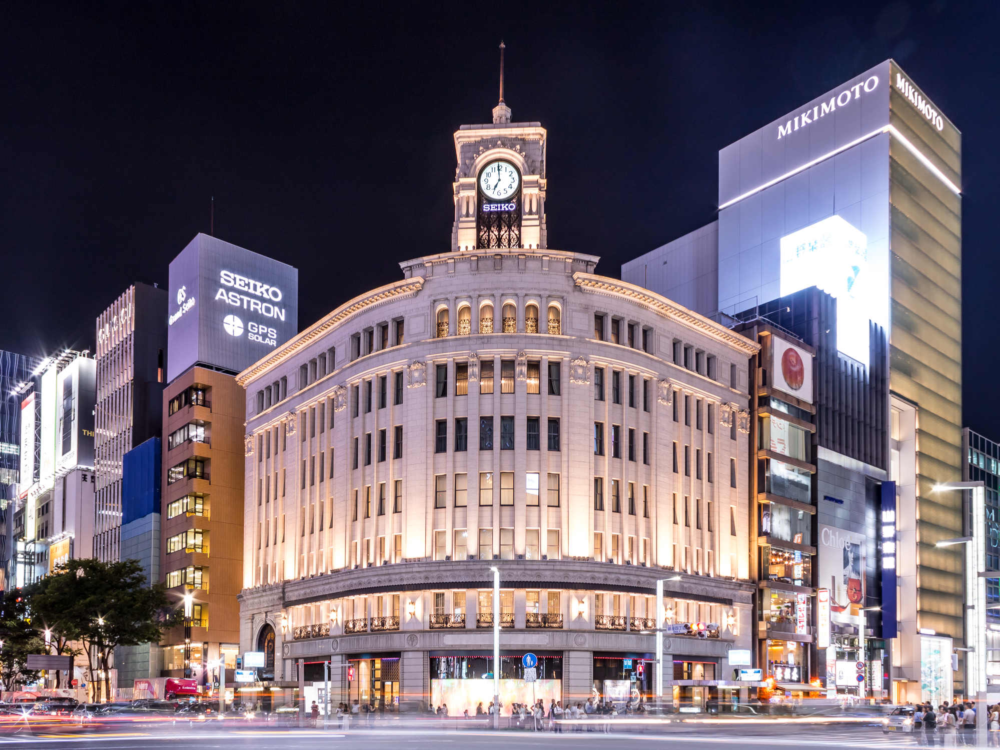

Tokyo is the bustling capital city of Japan, known as a massive urban hub where you can find Shinjuku, Shibuya.

Bright neon lights, tall office buildings, and the very busy Shinjuku Station.
Famous busy street crossing and great city views from Shibuya Sky.






Tokyo is a captivating metropolis of contrasts, seamlessly weaving centuries-old traditions with cutting-edge urban design. From the quiet, historic pathways of Asakusa to the electric, neon-lit towers of Shinjuku, it stands as a global beacon of culture, culinary mastery, and architectural marvels. It is a city that never stops moving, yet always remembers its roots.